Aero Wiki
Aerodynamics Wiki
Aerodynamics Wiki 1
Pressure
What is Pressure Pressure is simply the force per unit area, normal to the area. The fluid is made up of lots of particles, bouncing and moving around. These particles interact with the surface, bouncing off it. Through this they apply a force to the surface.
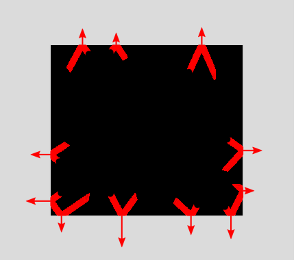
As a result of the fluid being isotropic (same in every direction), the pressure force on a surface is always normal/perpendicular to the surface.
Pressure therefore has the units of Newtons per unit area (N/A) or Pascals (Pa). It is a scalar quantity.
However if we take the N/A definition, and multiply above and below by metres (N/m^2 * m/m), we get newton metres per metre cubed. Newton metres is another word for work/energy. So here we are looking at joules per cubic metre - energy per unit volume.
In this sense, pressure is the energy contained in the volume of fluid
Relationship with Velocity
The standard relationship between pressure and velocity is captured within the Bernoulli equation. This equation is simply a one dimensional representation of the Euler equation along a streamline, so neglects compressibility, viscosity, time dependence.
The Bernoulli equation is below
𝑃1 + (0.5 ∗𝜌∗𝑣1
2) + (𝜌𝑔ℎ1) = 𝐶𝑜𝑛𝑠𝑡𝑎𝑛𝑡
● P1, called the static pressure, is the force per unit area type of
pressure
● 0.5 rho v2 is the dynamic pressure, the pressure that arises from
velocity. If you were to bring the fluid to a complete stop (0 velocity), the pressure in the fluid would rise by an amount equal to the dynamic pressure. (also looks quite similar to the kinetic energy formula doesn’t it? That’s essentially what it is) ● Rho g h is the pressure head - the pressure that comes from
gravitation, think of the potential energy when a ball is on top of a hill ● All of this is constant, so we call the sum of these three terms the
total pressure. This is the indication of the total energy in the flow. This is also called the stagnation pressure, as it’s the static pressure that would hypothetically be gotten if you brought the fluid to a standstill (0 dynamic) and no potential.
Air is faster - lower static pressure, higher dynamic pressure Air slows down - higher static pressure, lower dynamic pressure
It is useful to think of the trade off between dynamic and static pressure, particularly over a wing. With a wing in downforce, on top the air slows, its dynamic pressure transferring to static pressure, and a high static pressure region is created on the top surface. On the bottom, the air speeds up, and causes a low pressure zone.
Example: Within a vortex, the core spins really fast, and the fluid slows down as you slowly travel away from the core. Naturally then, the core of a vortex, going faster, is a lower pressure. This is the basis of vortex lift - using a vortex low pressure core on a surface
Bernoullis equation presents total pressure as constant, always. But this is
an idealisation along an inviscid streamline. In reality, due to viscous effects
(boundary layers, separation etc.), total pressure is not always conserved.
It is easy to see that in areas where total pressure is lower (lower energy),
there is less space to create this tradeoff between static and dynamic
pressure. Hence, we always try to place aerofoils and other aerodynamic
elements in areas of high total pressure/energy.
Surface pressure differential A static pressure differential across a surface is what creates aerodynamic forces.
Imagine a plate, with high static pressure on top, and low static pressure beneath. The force per unit area (acting downwards) on top is larger due to the higher pressure. Conversely, it is lower underneath the plate. This creates a net downwards force Aerofoils are designed such that this pressure differential can be created
Pressure Coefficient
Ultimately, we can measure pressure as Newtons per square meter,
pounds per square inch, elephant weights per brick area - nature doesn’t
care what units we use to define.
This is where dimensional analysis comes in.
We can compare two flows with different conditions if a specific set of conditions are maintained - the non dimensional pi terms. This is a result of the buckingham pi theorem and dimensional analysis.
The non-dimensionalised version of pressure is the Coefficient of Pressure.
𝐶𝑝= 𝑝/(0.5𝜌𝑣2) Where p - pfreestream, is the local static pressure (or for total pressure coefficient, the local total pressure), then this is divided by the dynamic pressure. It is a ratio between the static (or total) pressure and dynamic pressure.
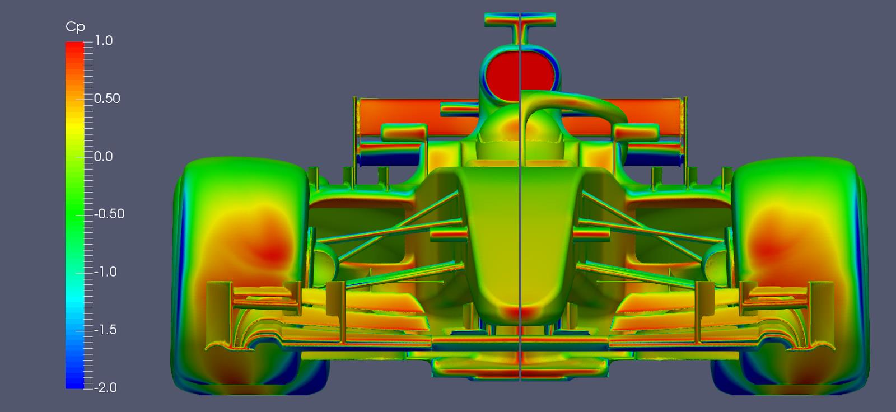
Static pressure coefficient. Look at the blue under the rear wing, and the red on top. This difference is what creates downforce
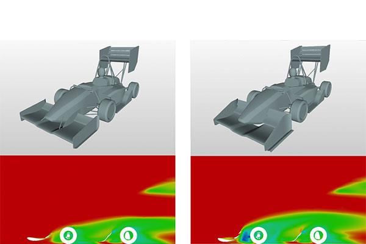
Total pressure coefficient shows the reduction in energy caused by the front wing and tires, along with a bit from the rear wing vortex
Momentum Diffusion If you’re studying the Navier Stokes equations, you can identify diffusive and convective terms. The diffusion of momentum is often attributed to viscosity, as that is the fact that sets the Navier Stokes apart from the Euler equations.
However, pressure also leads to momentum diffusion. Or more precisely, the pressure gradient.
If you have a fluid in a pipe, stationary, and immediately apply a pressure gradient across it, it will begin to move from high pressure to low pressure. The pressure gradient creates (diffuses) momentum.
Placement in the stress tensor Pressure is the isotropic, inwardly acting force from all directions on any material element. It is therefore the normal components of the cauchy stress tensor - ⅓ * tr(sigma).
Multi Element Aerofoils
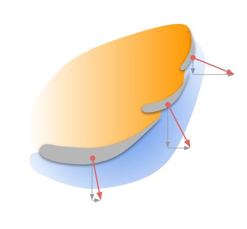
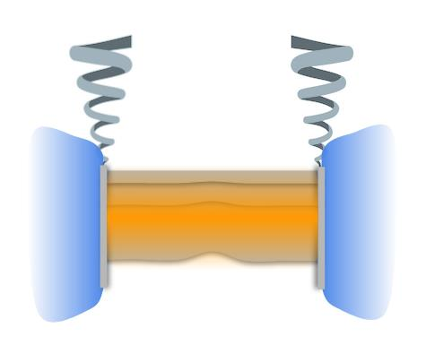
Fig. 1. The foundations of multi-element wing design slot effect (left) and
vortex management (right)
- Multi Element Aerofoil Theory and Geometry Essentially multi-element aerofoils allow wings to operate at much higher angles of attack and therefore improve the baseline lift of the aerofoil. We will look at the theory behind them.
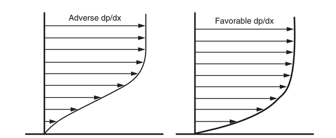
Fig. 2. Adverse pressure gradient reducing flow velocity
The angle of attack strongly affects the pressure distribution (coefficient of pressure (Cp) increases linearly with increasing angle of attack) . A higher angle of attack increases the lifting capability of the aerofoil due to a higher pressure difference but there is a limiting angle at which stall occurs and the flow over the wing separates (separation also depends on the Reynolds number and the location of laminar-to-turbulent transition). Lifting capabilities can be enhanced by pushing this “stall angle” further out thereby increasing the coefficient of lift (CL) of the wing.
The “slot” effect of multi-element aerofoils is what aeronautical engineers in both aviation and motorsport have utilised to achieve high lift in compact wings. Most explanations of this effect rely on this “energy injection” theory, that the slots allow high velocity (high kinetic energy) air form the low pressure side of the wing to bleed through and re energise the boundary layer of the high pressure side, this is a concept known as a “wall-jet” which is a viscous flow phenomenon. While this is quite a reasonable theory it doesn’t fully explain how the slot effect prevents separation at high angles of attack.
The main limitation on maximum lift is imposed by how much pressure rise (or velocity drop) the boundary layer on the suction side can withstand. The boundary layer’s ability to withstand the pressure rise is increased if the boundary layer is thin when it starts into the pressure rise.
The slot effect works on both of these things: the amount of pressure rise imposed on each element, and the thickness of the boundary layer starting into the pressure rise. So the slot has two functions:
- Starting a fresh upper-surface boundary layer at the
leading edge of each element. For elements after the first, this means a thinner boundary layer at the start of the pressure rise than would be there if there were no slots.
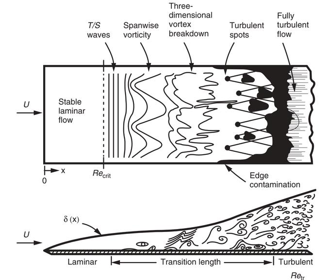
Fig. 3. Boundary layer thickness affects separation 2. Reducing the pressure rise imposed on the suction-
side boundary layer of each element. Slots do this in
either of two ways, or both simultaneously, depending on the situation of the given airfoil element.
● When there is an element ahead, it can provide
leading-edge suction-peak suppression, essentially by providing some flow turning ahead of the leading edge of the current element, so that the flow doesn’t rush around the leading edge as fast as it otherwise would.
● When there is an element behind, it can provide
trailing-edge dumping-velocity elevation, effectively by placing the trailing edge of the current element in a high velocity region near the leading edge of the trailing element.
Reducing the velocity at the leading edge of an element and elevating the velocity at the trailing edge both reduce the total velocity drop the boundary layer is subjected to.
For a slot to be effective in increasing the maximum lifting capability, the flow must smoothly pass from the lower surface to the upper surface of the wing.
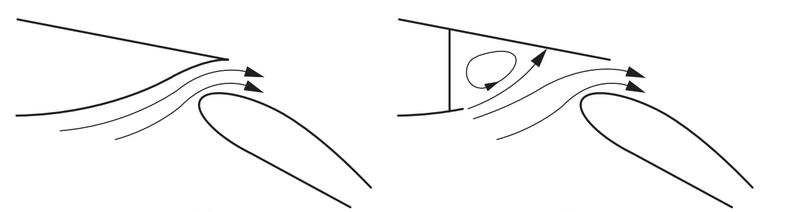
Fig. 4. Smoothly contoured slot (slot) and “cove” slot (right)
Unless the slot gap upstream is large, the wake will merge to some extent with the boundary layer of the element underneath. If too much of this boundary-layer mixing takes place, the separation resistance of the entire viscous layer will be reduced. Thus the choice of slot gap is a trade: Greater suction-peak suppression favors a smaller gap, but boundary- layer confluence penalizes a smaller gap.
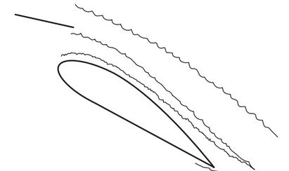
Fig. 5. Potential flow core between wake of forward element
and boundary layer of flap
*Read Understanding Aerodynamics by Doug McLean for more information
- Multi Element Aerofoil Performance Enhancement
2.1. High Lift Devices Devices which take advantage of flow properties to increase the CL of a wing are classed as high lift devices.
2.1.1. Flaps and Slats
Lift control is an import aspect for both motorsport and aircraft and is primarily controlled via flaps and slats. Flaps sit at the trailing edge of a wing and are themselves small aerofoil profiles. Changing the angle of a flap changes the overall angle of attack of the aerofoil and the camber of the aerofoil and can turn the flow more (increased lift) or less (decreased) lift.
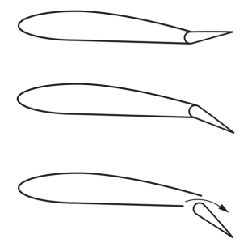
Fig. 6. Flaps set angles to decrease (top) and increase (middle)
lift, multi element flap system (bottom)
Slats which aren’t as common for motorsport applications sit at the leading edge of a wing and function in exactly the same way as flaps.
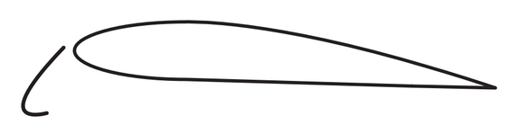
Fig. 7. Slat “drooped” to increase maximum lift
2.1.2. Gurney Flaps
Invented by Dan Gurney in the 1970’s this flap sits on the trailing edge of a wing and is perpendicular to the main plane and sits on the high pressure side of the aerofoil. The Gurney can increase the lift of a wing greatly and it does it through two mechanisms:
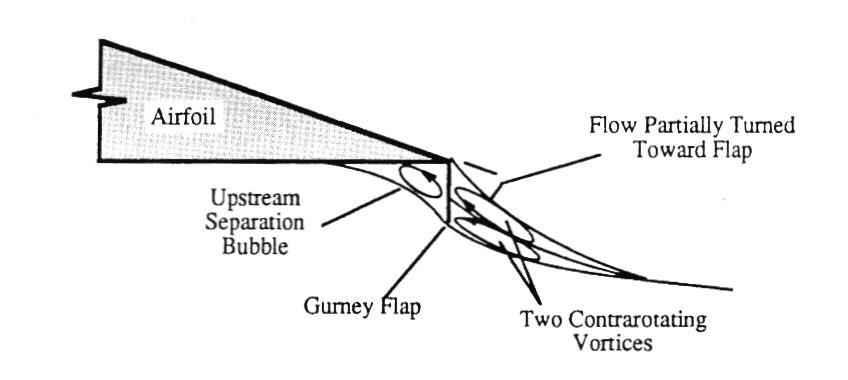
- Modifies what is known as the Kutta condition of
the aerofoil which is the point where the streamlines on the upper and lower surfaces of the wing merge back together. The flap moves this point further back effectively making the wing longer.
- Gives a sharper exit angle to the airflow (increasing
flow turning).
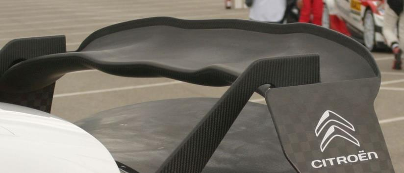
Fig. 8. Gurney flap on trailing edge of rallycross car
2.1.3. Blown Wings
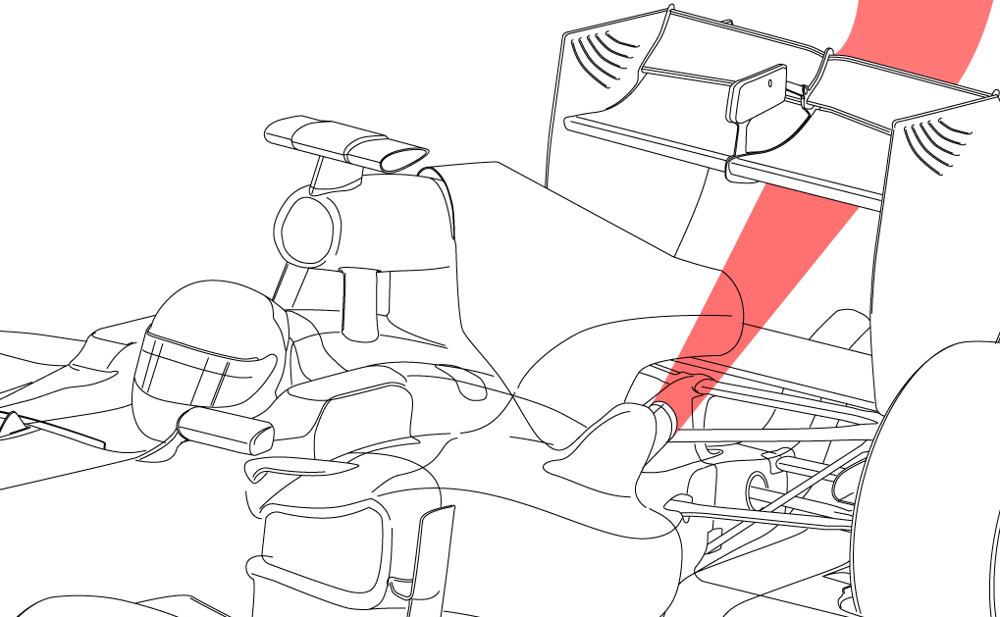
Fig. 9. Exhaust blown rear wing
A brute force approach that’s worked quite well for diffusers in motorsport is to channel high speed airflow from another source (engine exhaust, fan etc.) and funnel it onto the surface of the wing to manually reattach the flow.
2.2. End Plates Once you have a multi element wing it is rather difficult to get the low pressure side and high pressure side to stay separated at the wind ends as the high pressure air on top wants to “leak” down to the low pressure which not only reduces lift but also creates tip vortices which introduce nasty things like induced drag.
Solution, putting a massive obstacle between the two aerofoil surfaces such as an endplate reduces the pressure loss and reduces the size of the tip vortices.
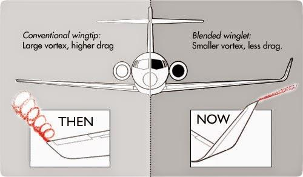
Fig. 10. Winglets, a more elegant endplate
2.2.1. Louvres
Louvres which are vents in the endplate, bleed high pressure off the top surface of the wing to further reduce tip vortices by bringing the air near the top of the plate closer to ambient pressure.
Boundary Layers
A boundary layer is the layer of fluid in the immediately above a bounding surface where the effects of viscosity are significant. The fluid in the boundary layer tends to cling to the surface. The boundary layer is, for incompressible flow, usually the only place where viscous effects have any sort of significant effect so even though it is a very small region it is probably the most important region of the airflow. The boundary layer starts at the surface of the body, where the flow velocity is zero and extends up until the flow velocity is equal to the surrounding airflow. The boundary layer also gets larger the further along the body it travels. A boundary layer can be seen in figure 1.
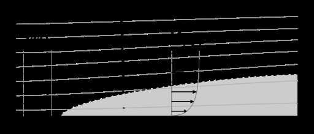
Figure 1: Simple Boundary Layer(Boundary Layer Ends at Dashed Line)
Laminar Boundary Layers There are two types of boundary layers, laminar and turbulent. Laminar boundary layers have very smooth flow with little friction. Laminar boundary layers however, are not stable and will generally transition to turbulent at some point along a body. The boundary layer at the front of a body begins as laminar and as the flow travels along the body this boundary layer gets larger and larger until it transitions to turbulent. If complete laminar flow is assumed, there are exact analytical solutions. For incompressible laminar flow over a flat plate at zero angle of attack, the equation:
𝛿= 5𝑥
√𝑅𝑒𝑥
gives the size of the boundary layer where x is the distance along the plate and the Reynolds number is given by:
𝑅𝑒𝑥= 𝜌𝑒𝑉∞𝑥
𝜇∞
Where ρe is the density μ∞ is the dynamic viscosity of the fluid and V∞ is the freestream velocity. It can be seen from these two equations that the thickness of the boundary layer is directly proportional to the square root of the distance and therefore, the boundary layer thickness grows parabolically.
Turbulent Boundary Layers At some distance back from the leading edge, the smooth laminar flow breaks down and transitions to a turbulent flow. From a drag point of view, it is best to have as small a turbulent boundary region as possible but laminar layers tend to break down more suddenly then turbulent boundary layers which is why they can be useful to help keep flows attached. There are no exact analytical solutions to a turbulent boundary layer but over a flat plane the thickness can be approximated by:
𝛿= 0.37𝑥
√𝑅𝑒𝑥 5
The turbulent boundary layer thickness is proportional to the fifth root of the distance. Comparing this to the laminar boundary layer, there is a more sudden increase in thickness followed by a much more gradual increase.
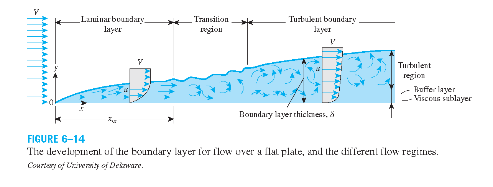
Figure 2: Turbulent and Laminar Boundary Layer Transition from Laminar to Turbulent
A boundary layer will rarely be just turbulent or laminar. Boundary layers start as laminar at the leading edge, as the boundary moves along the body it will become less and less stable with small bursts of turbulence beginning to grow within the layer, until finally at a certain region known as the transition region the boundary layer becomes completely turbulent. In the transition region the boundary layer will grow much quicker and then will level out again. The start of the turbulent region is known as the transition point and the x value(distance along the body) where this transition point is located is called the critical value xcr. This also allows us to calculate the critical Reynolds number for transition by placing xcr into the Reynolds number formula.
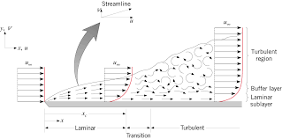
Figure 3: Transition from Laminar to Turbulent
Wall Shear Stress Wall shear stress is the amount of friction force applied to a body by the fluid per unit area. Wall shear stress(τ) at a point is defined as:
𝜏= 𝜇(𝑑𝑉
𝑑𝑦)
For y = 0. Where μ is the viscosity V is the velocity and y is the height from above the body. As temperature rises the viscosity of the air goes up and therefore, produces more shear stress. Since wall shear stress is caused by friction and friction generates heat, this means that the wall shear stress increases the value of the viscosity and therefore, increases the wall shear stress as it travels along the body. Seeing this formula makes it clear why turbulent boundary layers produce more friction drag since the velocity above the surface increases much more rapidly than in the laminar layer. In order to calculate the drag produced by the wall shear stress, the wall shear stress in the x direction can be integrated over the entire top and bottom surface of the airfoil. Wall shear stress is also a useful tool for noticing separation. If there is wall shear stress at a point that is in the opposite x direction it means there is reversed flow in the region and therefore flow separation.
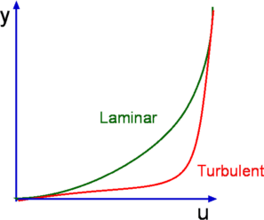
Figure 4: Laminar and Turbulent Boundary Layer Velocities above a Body
Momentum Diffusion Boundary layers are a direct result of momentum diffusion. Momentum diffusion is the spread of momentum through a fluid. Initially, before any obstructions have hit the flow, the momentum will be uniformly spread throughout the flow and everywhere will have effectively the same momentum. However, when an airfoil or body is introduced to the flow, a boundary layer and a spread of momentum in the flow form. Momentum diffusion is this spread of momentum and points in the direction of decreasing velocity, since diffusion moves from an area of high concentration to low.
Momentum thickness is an idea associated with momentum diffusion. Momentum thickness (δ**) is defined as the thickness of a layer of fluid velocity U for which the momentum flux is equal to the deficit of momentum flux through the boundary layer. It's essentially if you took all the momentum lost in the boundary layer and put it all into one thick piece of momentum loss, how thick would the piece be. See figure 5.
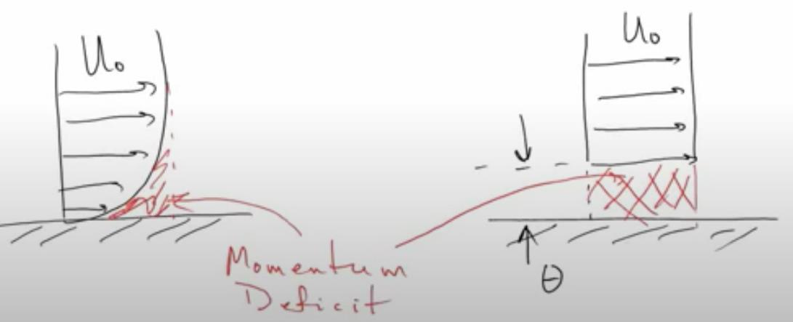
Figure 5: Momentum Thickness
Displacement Thickness:
Displacement thickness (δ*) follows the same lines as momentum thickness and is defined as the distance by which the solid boundary layer would have to be displaced in a frictionless flow to give the same mass deficit as the boundary layer. See figure 6.
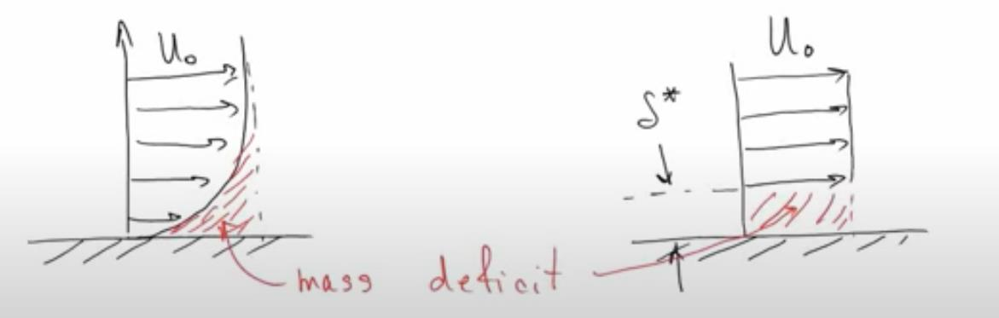
Figure 6: Displacement thickness
Flow Separation
Flow separation or boundary layer separation is the detachment of a boundary layer from a surface. This occurs in flow that is slowing down with an adverse pressure gradient after passing the thickest part of a streamline body or passing through a widening passage(e.g. diffuser).
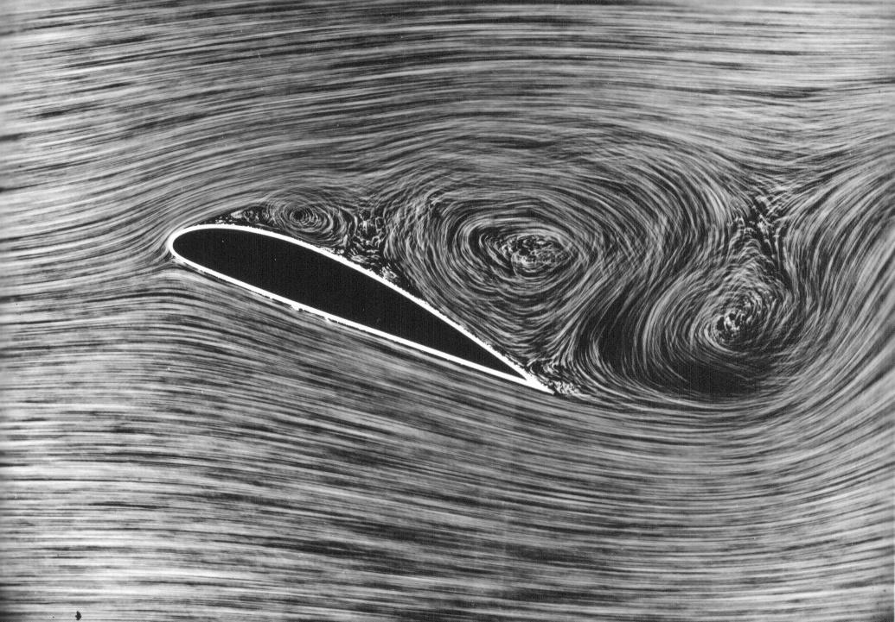
Figure 1: Flow Separation Example Adverse Pressure Gradients An adverse pressure gradient is when a flow is travelling from an area of low pressure to high pressure. An adverse pressure gradient will form anywhere that dp/ds > 0 and will form on every airfoil because the lowest pressure will always be near the front of the airfoil. Therefore, adverse pressure gradients aren’t that big a deal unless the gradient is a steep one. Steep pressure gradients quickly slow the flow going through the gradient. This loss of velocity then causes the boundary layer to reverse causing the flow to separate, see figure 2. Adverse pressure gradients generally cause trailing edge separation, this is where the flow at the back of the airfoil separates. Pressure gradients are usually analysed using pressure coefficient plots which is shown in figure 3. The best way to deal
with adverse pressure gradients is to move the lowest pressure region further forward to have a more gradual transition.
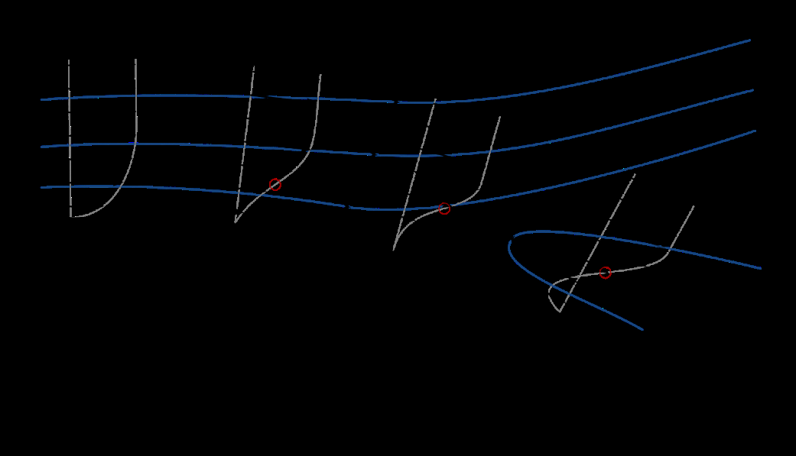
Figure 2: Boundary layer and flow separation
Adverse Pressure Gradient
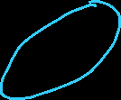
Low Pressure Region
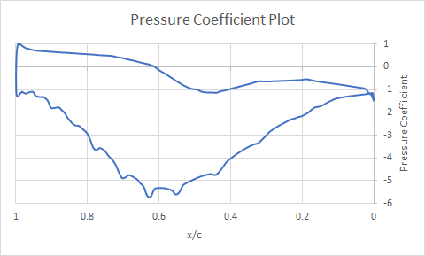
Figure 3: Pressure Coefficient vs chord Plot
Laminar Separation Bubbles Laminar separation bubbles are caused by a strong adverse pressure gradient and large curvature of a body, which causes the laminar boundary layer to separate from the airfoil surface. The separated, but still laminar flow is highly sensitive to disturbances, which causes it to transition to the turbulent state. The transition takes place away from the airfoil at the outer boundary of the separated flow area. The thickness of the now turbulent boundary layer grows rapidly which may lead to it reaching the airfoil surface again. The region where the turbulent flow touches the surface again is called reattachment point. The volume enclosed by the regions of separated laminar flow and turbulent flow is called a laminar separation bubble. Inside these bubbles the flow generally circulates but has very little energy exchange with the outer air which leads to these bubbles being quite stable.
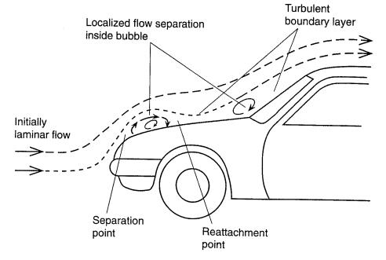
Figure 4: Laminar Bubble
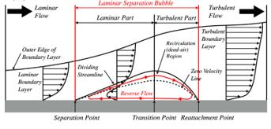
Figure 5: Laminar Bubble
Leading Edge Separation Leading separation is a follow on from laminar separation bubbles. Leading edge separation is the appearance of a separation bubble on either side, often the suction side, of an airfoil in the nose region if the angle of attack exceeds a critical value. Due to the large curvature, at the front of certain airfoils or airfoils at a certain angle of attack, a separation bubble will form. This is called leading edge separation. The flow will often reattach with leading edge separation but depending on the circumstances, there could be a small bubble or a large bubble formed and if its bad enough there could even be a leading edge stall where there is no reattachment. Leading edge separations can be seen in figure 6 and 7.
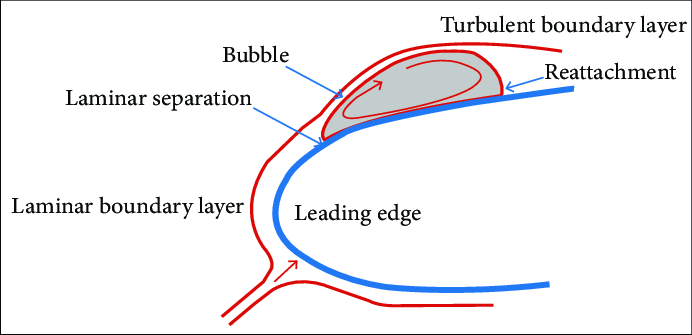
Figure 6: Leading Edge Separation
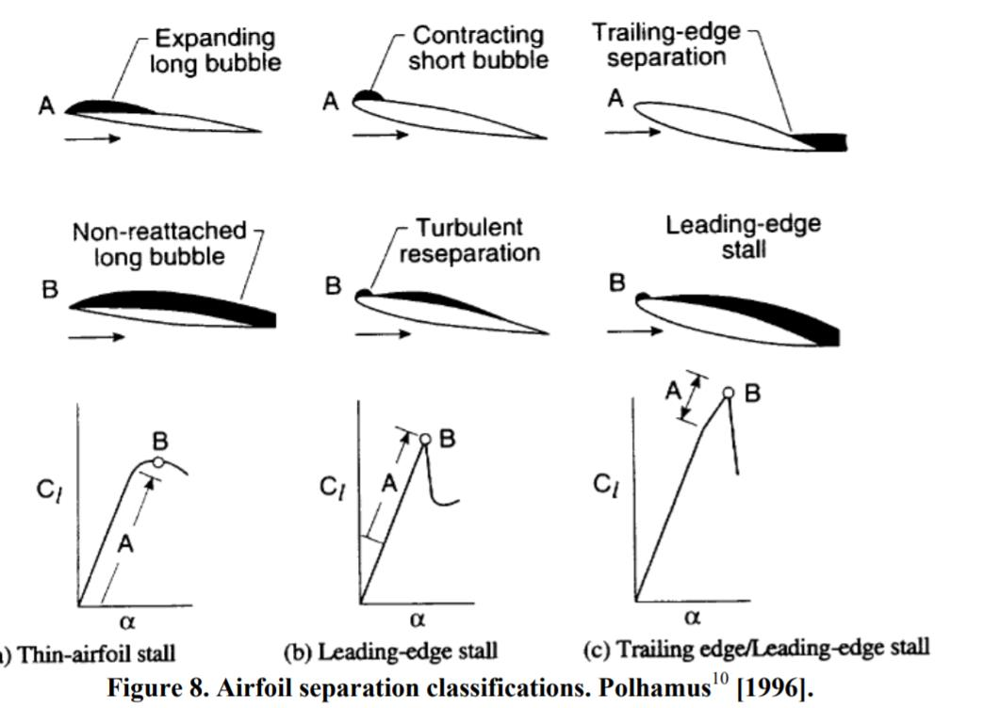
Figure 7: Different types of separation
Effects of Separation The biggest effect of separation is generally the increase in drag. When the flow separates from the back of the airfoil, there is usually a large increase in pressure drag. Lift can be effected in a couple of ways, if the separation is large the lift will dramatically decrease and could even stall. However, sometimes if the angle of attack of an airfoil is increased, lift will go up but separation may also form. This leads to an increase in drag but also an increase in lift. It is best to have as little or no separation but sometimes it may be beneficial to have mild separation with an increase in lift. Separation can also lead to vortex shedding which can lead to vibrations within a structure.
Vortices
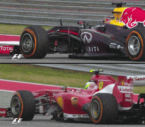
Fig. 1. Y250 Vortex
- What are Vortices? Vorticity generally implies some form of fluid particle rotation. The typical intuitive vortex is a tornado. Vortices fall under the category of coherent structures (i.e. noticeable patterns in the flow). A moving vortex carries some angular momentum, linear momentum, energy, and mass, with it.
Vorticity is essentially a measure of the amount of rotation in a flow field as such we can have rotational flows and irrotational flows.
- Theory of Vortices
2.1. Vorticity To formally state vorticity we must use the following vector calculus relation:
𝜔= 𝛻× 𝑼
𝜔= [ 𝜕
𝜕𝑥 𝜕
𝜕𝑦 𝜕
𝜕𝑧] × [𝒖 𝒗 𝒘] = (𝜕𝑤
𝜕𝑦−𝜕𝑣
𝜕𝑧 𝜕𝑢
𝜕𝑧−𝜕𝑤
𝜕𝑥 𝜕𝑣
𝜕𝑥−𝜕𝑢
𝜕𝑦)
A problem associated with this method is that vorticity cannot distinguish between swirling motions and shearing motions.
2.2. Vortex Lines and Vortex Tubes In the same way that we can construct a geometric line that is everywhere tangent to the velocity vector in a velocity field and
create a streamline, we can also create a line that is everywhere tangent to the vorticity vector calculated above and create a vortex line.
In the same way that when we bundle streamlines together to create a streamtube we can bundle vortex lines together to create a vortex tube.
If the cross-sectional area of a vortex tube decreases, either in time or along the length of the tube, the strength of the vorticity (the magnitude of the vorticity vector) must increase.
A vortex filament is a vortex tube whose cross section has a maximum dimension that is infinitesimally small. The cross-sectional area of a vortex filament is thus also infinitesimally small, but it is still assumed to vary along the length of the filament, so that the filament can still satisfy the definition of a vortex tube. For a vortex filament, the flux of vorticity across a cross-section reduces to the product of the vorticity magnitude and the cross-sectional area, which is called the intensity of the filament.
2.3. Helmholtz’s Theorems Vortices are governed by four simple laws.
2.3.1. First Theorem
In a constant-density flow, the deviations in velocity in the neighborhood of a point can be expressed as the sum of two parts: a deformation velocity field and a solid- body rotation with angular velocity ω/2.
2.3.2. Second Theorem (Vortex Intensity Conservation)
Intensity of a vortex filament is constant along its length. Vortex filament intensity is conserved and so a vortex filament can’t end within the fluid domain and so must either form a closed loop or end at fluid boundary (can’t be a no-slip boundary).
Fig. 2. Vortex doesn’t “end” at runway surface
2.3.3. Third Theorem
As a vortex tube evolves in time, fluid particles cannot cross the bounding surfaces of the tube, as such the vortex tube is always made up of the same fluid particles. This tells us that for small viscosity, the natural tendency of a vortex tube is to remain anchored to the same material tube, and that vorticity migrates into or out of that material tube only through viscous diffusion.
2.3.4. Fourth Theorem
The intensity of a vortex tube is constant regardless of how the tube moves around.
2.4. Biot-Savart Law If we wanted to invert the velocity to vorticity relationship we would use the Biot-Savart Law.
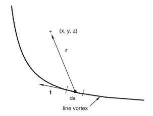
Fig. 3. Biot-Savart Law
𝑈(𝑥, 𝑦, 𝑧) = 𝛤
𝑟3 𝑑𝑙
4𝜋∫ 𝑡 × 𝑟
However we have to be careful and realise this does not imply a cause-effect relationship as this would mean some sort of action at a distance induced by the vortex. (Where Γ is the circulation of the vortex)
Only holds if the following assumptions are made:
-
The fluid fills all of space.
-
The fluid is at rest at infinity, with the velocity magnitude
1
at large distances dying off at least as
𝑟2.
- Vortex Effects
3.1. Tip Vortices
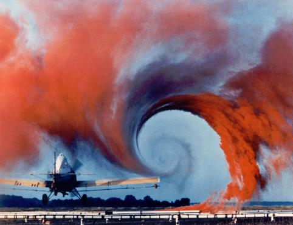
Fig. 4. Vortex roll-up at wing tip
Wing tip vortices form due to a pressure difference between the top and bottom surfaces of a wing inducing a flow from the high pressure side to the lower pressure side. These vortices which can form on wing elements without endplates create upwash and lead to induced drag.
3.2. Vortex Lift
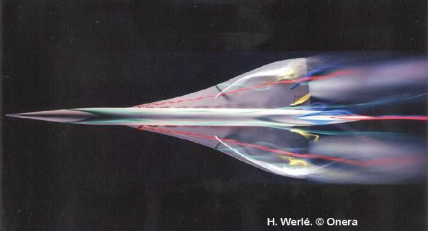
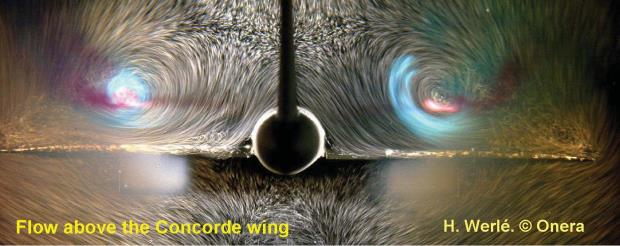
Fig. 5. Concorde primarily generated lift through vortices
Conventional unswept wings generate lift based on the concept of a “bound” vortex. Highly swept wings can continue to generate lift at high angles of attack via vortices generated by leading edge separation. The airspeed within the vortices on the upper surface of the wing is fast and so creates a low pressure region which generates lift.
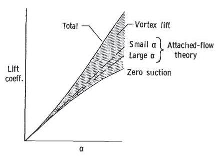
Fig. 6. A Concept of the Vortex Lift of Sharp-Edge Delta Wings based on a Leading-Edge suction Analogy, Edward C. Polhamus
Despite the loss of lift due to separated flow vortex lift enhances a wing's potential flow (baseline) lift value. Strakes operate via this exact same mechanism.
- See Polhamus Theory for more information 3.3. Vortex Sealing
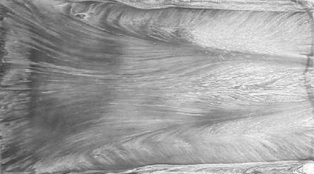
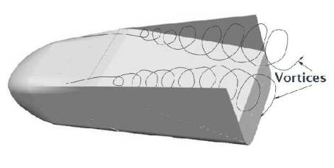
Fig. 7. Bluff body demonstrating vortex sealing on diffuser from
Willem Toet’s blog
When seeking downforce from underfloor devices it is beneficial to keep high pressure air from ingressing underneath the car. Vortices are generated anyway from the interaction of the low pressure air of the diffuser and the high pressure atmospheric air outside. Vortex generators on the barge board can be used to direct vortices to the edge of the diffuser sealing the low pressure expanded air from the outside air further.
3.4. Vortex Breakdown
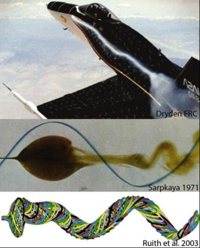
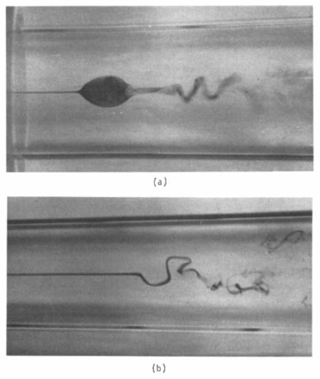
Fig. 8. Vortex breakdown on jet (left) and bubble vs. spiral
breakdown (right)
Vortex breakdown and loss of a coherent structure occur due to the formation of an internal stagnation point along the vortex axis which is triggered when the flow goes beyond a
certain value of swirl (much like a critical Reynolds number signalling the onset of turbulence).
Direct cause of vortex breakdown is still a grey area with theories posited about flow instability upstream of the breakdown point causing an asymmetry in the vortex that leads it to spiral further and further from its axis, however this theory was refuted due to no noticeable instabilities in experimental tests.
- Vortex Identification Methods We know the definition of vorticity is not ideal for practical identification of vortical structures. Methods have been developed to improve upon this definition for practical vortex identification suitable for computation. Both Q-Criterion and Lambda 2 evaluate areas for low pressure cores, which leads to an improvement over the conventional vorticity definition.
4.1. Velocity Gradient Tensor (Strain-Rate Tensor)
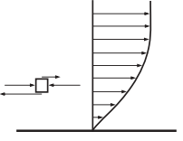
Fig. 9. Velocity Gradient at Point Near Solid Surface
Start with a velocity gradient which represents the velocity of a fluid layer at a certain distance from a surface.
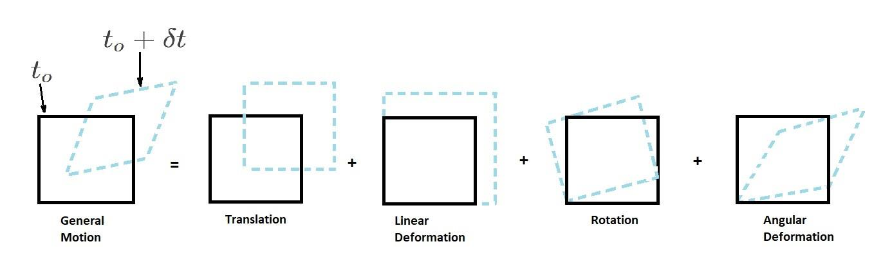
Fig. 10. Fluid Particle Movement is a Superposition of Motions
Fluid particles experience strain rates (part of deformation) and rotational motions, these are the kinematic (not looking at forces which cause movement) motions of a fluid particle.
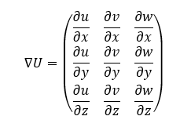
For 3D fluid motion we can create a velocity gradient tensor shown in the matrix above. This matrix can be split into symmetric and antisymmetric components which represent the deformation rate and rotation rate experienced by the fluid particle.
Symmetric Component (6 Independent Terms):
𝑆= 1
2 (𝛻𝑈+ (𝛻𝑈)𝑇) = 𝐷𝑒𝑓𝑜𝑟𝑚𝑎𝑡𝑖𝑜𝑛 𝑅𝑎𝑡𝑒
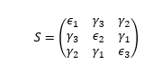
where:
𝜖= 𝑳𝒊𝒏𝒆𝒂𝒓 𝑺𝒕𝒓𝒂𝒊𝒏 𝑹𝒂𝒕𝒆 𝛾= 𝑺𝒉𝒆𝒂𝒓 𝑺𝒕𝒓𝒂𝒊𝒏 𝑹𝒂𝒕𝒆
Antisymmetric Component (3 Independent Terms):
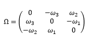
1
Ω=
2 (𝛻𝑈−(𝛻𝑈)𝑇) = 𝑅𝑜𝑡𝑎𝑡𝑖𝑜𝑛 𝑅𝑎𝑡𝑒
4.2. Tensor Invariants As an aside, tensor invariants essentially “eigenvalues” for tensors which means they are independent of a coordinate system.
𝑃= 𝑡𝑟(𝐴)
𝑄= 1
2 ((𝑡𝑟(𝐴))2 −𝑡𝑟(𝐴2))
𝑅= 𝑑𝑒𝑡(𝐴)
4.3. Q-Criterion
Defined to be the positive (𝑄> 0) second principal invariant of
the velocity gradient tensor (i.e. where 𝑄 is positive, there are vortices).
𝑄= 1
2 (||Ω||2 −||𝑆||2)
Writing the equation out in it’s full form helps us to see the kinematic relations.
2) + 1
2)]
𝑄= (𝜔1
2 + 𝜔2
2 + 𝜔3
2) −[(𝛾1
2 + 𝛾2
2 + 𝛾3
2 + 𝜖2
2 + 𝜖3
2 (𝜖1
𝑄 represents a local balance between the rotation and deformation rates of a fluid element so a vortex is defined to be a region where the antisymmetric component predominates the symmetric one.
4.4. Lambda 2 This method is based on searching for pressure minima across the vortex (but removes the effects from unsteady straining and viscosity by discarding these terms), by taking the gradient of the Navier-Stokes equations and decomposing it into symmetric and antisymmetric parts. Gradient of Navier- Stokes equations yields:
𝑎𝑖𝑗= −1
𝜌𝑝/𝑖𝑗+ 𝜐𝑢𝑖/𝑗𝑘𝑘
𝑎𝑖𝑗= [𝐷𝑆𝑖𝑗
𝐷𝑡+ 𝛺𝑖𝑘𝛺𝑘𝑗+ 𝑆𝑖𝑘𝑆𝑘𝑗] + [𝐷𝛺𝑖𝑗
𝐷𝑡+ 𝛺𝑖𝑘𝑆𝑘𝑗+ 𝑆𝑖𝑘𝛺𝑘𝑗]
where 𝑎𝑖𝑗is the acceleration gradient and 𝑝𝑖𝑗(the Hessian of
the pressure) is symmetric. Decomposing the acceleration gradient into symmetric and antisymmetric parts we get what is known as the vorticity transport equation as the antisymmetric part and the symmetric part:
𝐷𝑆𝑖𝑗
𝐷𝑡−𝜐𝑆𝑖𝑗/𝑘𝑘+ 𝛺𝑖𝑘𝛺𝑘𝑗+ 𝑆𝑖𝑘𝑆𝑘𝑗 = −1
𝜌𝑝𝑖𝑗
If 𝑝𝑖𝑗 has two negative eigenvalues, there is a local pressure
minimum on the plane of the two eigenvectors associated with those eigenvalues.
The first term on the left-hand side of the equation above represents unsteady irrotational straining and the second
term represents viscous effects so by considering only 𝑆2 + 𝛺2 allows one to determine the existence of a local pressure minimum due to vortical motion.
Since the tensor 𝑆2 + 𝛺2 is symmetric, it has only real eigenvalues. We assume the the eigenvalues are ordered as such:
𝜆1 ≥𝜆2 ≥𝜆3
As such we can say that if 𝜆2 < 0 we can conclude that a vortex is present. Essentially this method locally compares
strain and rotation, requiring 𝜆2 < 0 is equivalent to requiring that some measure of rotation rate prevails over some measure of deformation rate.
- Vortex Devices Vortices are very useful for flow control and are realised in a variety of devices.
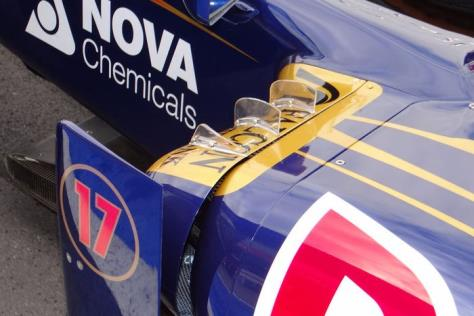
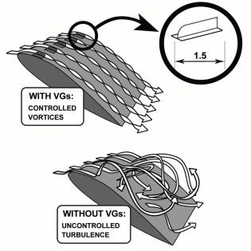
Fig. 12. Vortex generators for flow attachment on sidepod (left) and
flow attachment on wing device (right)
Vortex generators are most commonly used for flow reattachment either on steeply curving surfaces (such as sidepods) or wings at high angles of attack. They do this by drawing in high energy air from the freestream. Vortex generators come in many types such as vanes, doublets, wheelers, ramps etc.
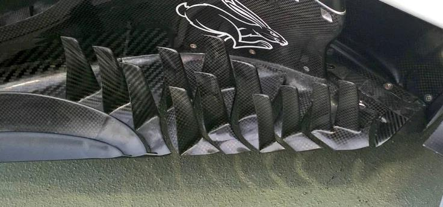
Fig. 13. Bargeboards serve to direct “condition” flow and generate
vortices
Vortices also serve to direct air such as with bargeboards which generate a curtain of air for sealing of a diffuser.
Tire Squirt
What is tire squirt?
Tire squirt is the unwanted runoff of air from the contact area at the front of a wheel into aerodynamic devices, and it is most prevalent at the rear of the car, with unwanted air entering and disrupting the diffuser. The result of this air entering the diffuser is that it reduces the efficacy of the device, disturbing the air flowing through the diffuser and reducing the overall downforce produced.
How is tire squirt created?
Tire squirt is created by air hitting the front of a moving wheel. This stagnation region (force hitting against an immovable wall effectively) forces the air to shoot off either side of the tire and form vortices. It is defined in traditional aerodynamics as a jetting phenomenon, which is ‘the process of air being squeezed out of the frontal contact patch and is responsible for an area of low pressure’ [1] (figure 1)
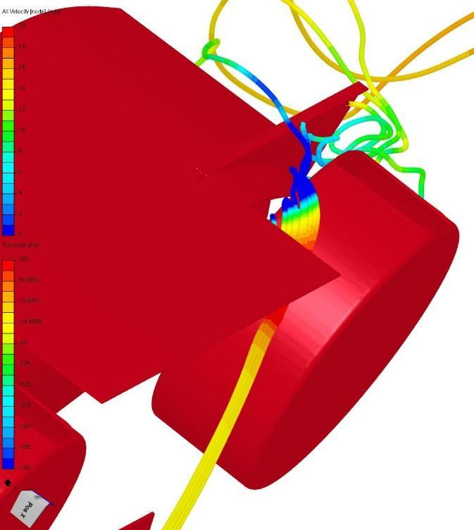
Figure 1: This image shows a particle trace hitting the rear wheel of a FSAE car and being pushed into the diffuser area as a vortex, in a phenomenon known as tire squirt.
As can be seen in figure 1, when the air hits the rear wheel it is forced to go around the wheel, being pushed into the diffuser area as a vortex. The streamlines in the image show the path of this vortex and the effect it can have
on a diffuser, something that is made clearer in figure 2.
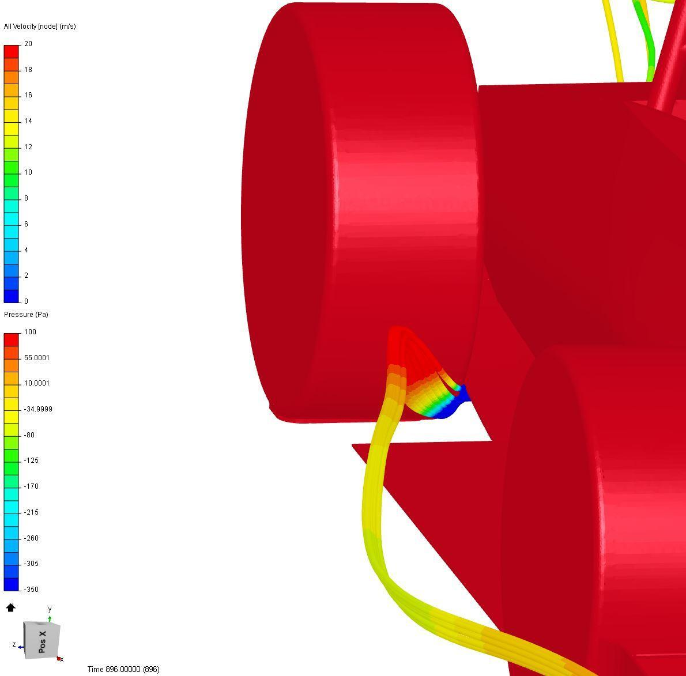
Figure 2: This image shows the affect of inwards bound tire squirt. This air moving under the car and into the diffuser region is something that we want to minimise so that the diffuser can work more effectively.
This image clearly shows the magnitude of the problem that tire squirt can cause. This air entering the diffuser will disrupt the flow under the car and cause a reduction in downforce.
So you have tire squirt? Can it be avoided?
In an open wheel car like a FSAE car, the short answer is no. Air will always be hitting the rear wheel so tire squirt will always be an issue in some form, but it can be minimized.
How do I minimise the effects of tire squirt?
The effects of tire squirt can be minimised very successfully by adding various small aerodynamic devices called vortex generators. The purpose of these devices, as the name suggests, is to create a vortex. F1 teams use slots built in to the floor of the car (figure 3) to purposefully create a vortex that runs counter to the vortex created by tire squirt. This counter vortex works to effectively ‘cancel out’ the vortex caused by the air hitting the tire. It also works
to seal the diffuser so that the tire squirt vortex cannot be dragged under the car and into the diffuser area. These slots, as can be seen in figure 3, are also used to direct air around the back of the rear wheel in an attempt to minimise the amount of air hitting the wheel directly. This two-phase solution works to maximise the diffuser potential by keeping it as interference free as possible.
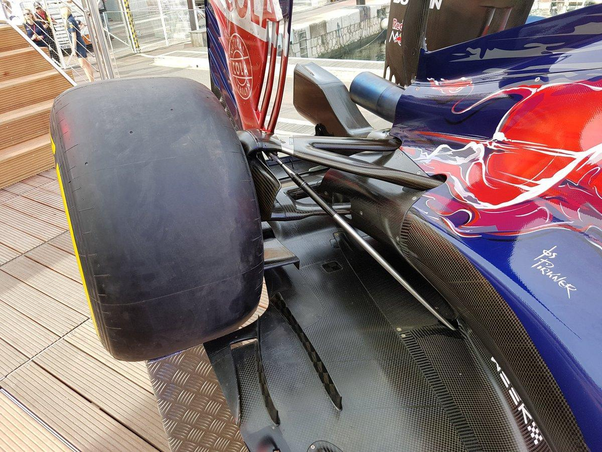
Figure 3: This image shows the Toro Rosso solution to tire squirt, with slots on the floor of the car trying to both deflect air around the back of the rear wheel to minimise the contact area, and also the straighter slot which serves to create a vortex to seal the diffuser and prevent the vortex created by the tire from entering the diffuser.
The effect of using slots in the floor to counteract tire squirt can also be applied in the diffuser region or on the sides of the diffuser. This is the strategy most commonly used by FSAE teams as it is the easiest way to separate the high pressure air from the sides of the car from the low pressure air under it. [2]
Teams in FSAE use vertical diffuser sides to create vortices in the region between the tire and diffuser. This helps to create a seal on the air passing through the diffuser and reduce the chance of separation. [3]
Our solution:
For our car, our current solution can be seen in figure 4. The idea of having an extended strake with an ‘inverted T-bar’ inside the diffuser is to create a sealing vortex as close to the ground as possible. The theoretical benefit of this is that the inner region of the diffuser is sealed completely from the vortices caused by tire squirt, which allows it to be undisturbed by the tire squirt, and remain effective.
Figure 4: This image shows our current diffuser strategy. Note the ‘inverted T-bar’ added to the strake, which is intended to create the sealing vortex to protect the integrity of the flow of the inside of the diffuser.
References:
[1]-Sprot, A.J. and Sims-Williams, D.B. and Dominy, R.G. (2012) 'The aerodynamic characteristics of a fully deformable Formula One wind tunnel tyre.', SAE International journal of passenger cars. Mechanical systems., 5 (2). pp. 1026-1041.
[2]-Gupta, S. and Kishal Saxena. “Aerodynamics analysis of a formula sae car.” (2017).
[3]-Ehirim, O., "Optimal Diffuser Design for Formula SAE Race Car Using an Innovative Geometry Buildup and CFD Simulation Setup with On-Track Testing Correlation," SAE Technical Paper 2012-01-1169, 2012, https://doi.org/10.4271/2012-01-1169.